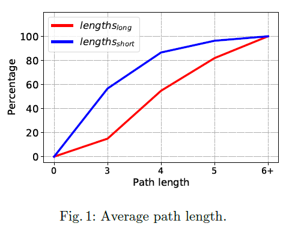
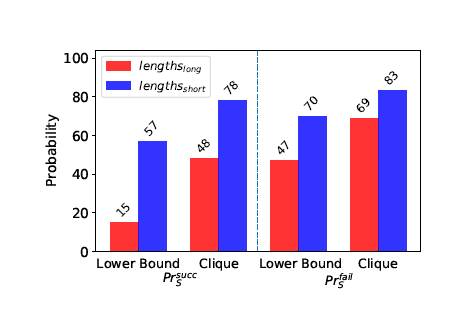
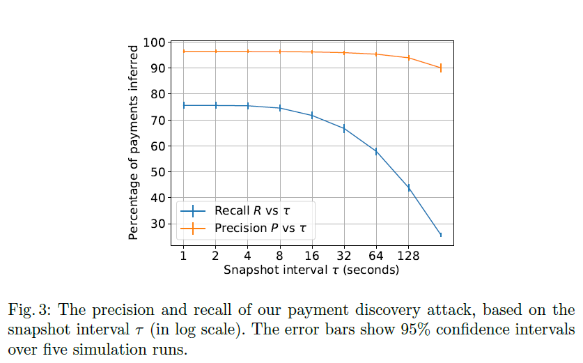

闪电网络隐私的实证分析
摘要
支付通道网络Payment channel networks，特别是闪电网络Lightning Network，似乎为比特币和其他基于区块链的加密货币缺乏可扩展性和隐私性提供了解决方案，先前的研究主要关注可扩展性，可用性以及Lightning Network的加密经济，然而很少探索他在实践中实现的隐私级别。本文对Lightning Network提供的隐私性提出了一个进行深度分析，提出了几种利用网络公开信息的攻击，来了解那些设计为保密的信息，例如一个节点拥有多少货币或者在网络中路由的一次交易中谁是发送方，谁是接收方。
1.介绍
从2008年推出以来，比特币已经成为最广泛应用的加密货币。比特币去中心化和无需许可性质允许所有用户加入网络，并且避免了对控制了资金流的中介机构和当局的需要。相反，每笔交易的有效性由网络参加者们自己做出的共识决定。有效的交易被记录再公共区块链中。因此，区块链实际上充当记录所有已经发生交易的账本。
在网络中将交易广播给所有人以及在永久账单中存储他们的需要对基于区块链的加密货币的寿命提出了两个问题。首先，他带来了严重的可扩展性限制：比特币区块链现在已经超过300GB，并且比特币每秒仅能完成10笔交易。其他的加密货币的吞吐量略高，然而在这些基于广播的系统，吞吐量和安全性存在一个固有的权衡。第二，账本的透明性意味着任何人可以观察货币的流向，确定交易的另一方，并且将不同的交易联系起来。这一点在比特币上表现得最为明显，然而这种类型的分析甚至拓展到明确设计隐私的加密货币。
目前为了解决可扩展性而部署的最有前途的解决方案是所谓的"layer-two"协议，其中Lightning Network （LN）是自从2018年3月问世以来最受欢迎的解决方案。在LN中，成对的参与者使用比特币区块链来打开和关闭二者之间的payment channels 。在这个通道内，这两者可以进行双方之间的任意多的链下交易，而不需要使用区块链。除了单一通道之外，Lightning支持多multi-hop支付路由，这意味着即使是没有直接互联的参与者仍然可恶意通过更广义的payment channel network (PCN) 路由支付。在这个网络中的节点可以收取路由小费，以这种方式他们被激励去路由支付。
除了在提高可扩展性方面的承诺，Lightning 似乎还解决了隐私问题。像我们在第二节详细说明的，为了建立PCN，网络中的节点和网络中大多数通道是公开的（尽管有些通道可能是私有的），给定通道的容量也是如此，这意味着这条通道可以路由的最大支付值。然而， 与通道有关的个人余额是保密的。此外，支付不会广播给所有节点并且不会存储在公开账本中。即使是通过multi-hop路由的支付，它使用洋葱路由来保证在路由路径上每个节点只能识别他的直接前任和后继节点。
然而，就像基于账本的加密货币一样，Lightning网络中隐私潜力和现实之间的差距很大，正如我们在本工作中所示。特别地，我们考虑LN承诺的四个隐私属性：
- Private channels 应该允许两个节点共享一个通道，但是保持他和他所有信息（容量，参与者等等）存在，并对网络中其余部分隐藏，我们在3.2节探索了这个属性，通过提出一个启发式方法，他能够识别私有通道的链上资产以及通道上的一方甚至双方。
- 第三方余额秘密，就是说即使通道的容量是公开的，参与者各自的余额也应该是保密的。我们在第四节中探索了这个属性，通过提出了评估了一种通用方法，主动攻击者（即网络中右节点的开发通道）可以发现通道上的余额。
- 路径关系匿名表示，路由支付的中继节点不应该知道除了他的直接前任和后继之外的其他节点是支付路由的一部分。我们在第5节探索了这个属性，我们利用一个我们构建的LN模拟器（在5.1节描述）来评估一个中继节点推断他所路由的支付的发送方和接收方的能力
- 路径外支付隐私， 不涉及路由的其他任意节点不应该推断得到任何关于路由节点或者支付值的信息，我们在第6节探索了这个属性，通过提出和评估了一个方法，一个主动攻击者可以使用发现余额的能力来形成
网络快照。通过比较连续的网络快照，攻击者可以通过确认通道余额的变化位置以及多少推断出支付。
1.1道德考虑
第五节和第六节提出的攻击是在一个模拟网络上进行评估的，而不是实时网络，但是在第四节的攻击是在实时测试网络评估的。与比特币网络上的相关主动攻击一样，我们尽一切努力来保证我们的攻击不会影响网络的正常运行：攻击期间发送的信息没有不正常的影响也不会花费任何金钱来处理，并且他们的量相对较小（我们最多向每个被攻击节点发送24条信息）。因此我们相信，对于处理这些信息的节点没有任何长期或短期的破坏性影响。我们在2020年向三个主要LN代理商和流动性提供商Bitrefill的开发者公开了本文的结果，并在之后和Ligtning开发者讨论了本文。
1.2相关工作
我们认为所有关注Ln的研究都是相关的，特别是都是关于隐私性的。大多数前人的研究已经关注了LN的可扩展性，实用性和加密经济这些方面，或者关注他的图属性。Rohrer等人研究了LN对基于拓扑的攻击的敏感性。Tochner等人提出了提出了一种利用multi-hop路由方式的Dos攻击。在其他发现中，他们还表明，是个最中心化的节点可以通过他们的攻击破坏大约80%的路径。Perez-Sola等人提出了一种攻击，他能减少一个节点通道的容量，从而阻止节点参与到网络中。Tikhomirov等人展示了虫洞攻击是如何阻止诚实中间节点参与支付路由的。
在隐私方面，Malavolta等人发现了一种利用锁机制的新的攻击，这种锁机制允许不诚实用户从路由路径上的诚实中间节点偷取支付小费。他们提出匿名multi-hop 锁作为一种更安全的选项。Nowatowski和Ton研究了各种启发式方法，来确认在比特币区块链上的Lightning交易。在我们这项工作的同时，Romiti等人构建了几个启发式方法来将Lightning实体和比特币钱包连接起来。其中一个启发式方法与我们在3.2节构建的tracing heuristic 相似但是他们的目标是创建增强的比特币集群方法而不是识别私有通道，正如我们在第四节进一步描述的，其他人已经实施了余额发现攻击，这些攻击的主要限制是他们依赖攻击者收到的特定的错误信息，所以随着网络的发展很容易变得无关紧要。我们通过提出了一种通用攻击（在第四节）以及更广泛的研究这种攻击的影响，克服了这种限制。
Beres等人简要的研究了寻找支付发送方和接收方的问题。与我们的工作类似，他们基于公开可用的网络快照和某些节点所有者发部的信息开发了LN流量模拟器，然而，他们的工作只考虑了single-hop支付，也没有研究其他隐私属性。很多其他LN研究使用了网络模拟器，。其中几个模拟器被用作执行LN网络的经济分析，然而CLoTH模拟器只提供了性能统计数据（例如完成一笔支付的实践，支付失败可能性等等）。然而，所有这些模拟器都对拓扑结构、路径选择算法和支付分布做出了几个简单的假设。因此他们不适合分析其隐私属性。
2.背景
为了打开Lightning通道，双方将比特币存入一个2of2的多签名地址，这意味着花费这些货币的任何交易都需要被双方签名。这些资金代表着这个通道的容量，也就是说，可以通过这个通道传输的最大交易值。一旦一个通道建立起来，参与者可以使用它来交换任意数量的支付，只要其中一个有正余数。他们也可以通过一个比特币交易来关闭通道，该交易从2of2多签名地址返还他们各自的余额。
然而，大多数用户并没有直接连接，因此需要通过公有LN来路由他们的支付，在公有LN中，节点通过公钥标识，边代表着通道，他们与一个通道认证id、通道容量C、和通过该通道的路由小费fee公开关联起来。边也隐 式地与通道的收入和支出秘密联系起来。除了只有在路由时才显示的私有通道外，网络的拓扑以及他的公开标签对每一个节点都是公开的。当路由一个支付的时候，发送方（Alice）使用洋葱路由来隐藏他和接收者（Bob）的关系。Alice根据和Bob之间通道的容量和路由小费来选择完整的路径（源路由）。最终的目标是这条路径上的每一个中间节点转发这个支付到他的后继节点，并期望他的前任节点也这么做，这样余额就不会改变。然而节点不能立刻发送资金，因为可能是支付失败的情况。为了创建中间节点状态，LN使用了hashed timelock contracts(HTLCs) 哈希时间锁合约，这个合约支持有时间限制的有条件支付。总之，这个协议遵循以下五个步骤让Alice支付Bob：
- 开发票， Bob生成一个密钥x并且计算他的哈希值h。他开一个包含h和一些支付金额amt的发票
invoice给Alice - 洋葱路由，Alice选择了一条路径$A \rightarrow U_1 \rightarrow … \rightarrow U_n \rightarrow B$ ，然后Alice生成一个Sphinx数据包，目标是Bob，路由经过$U_i$ 节点。然后Alice发送最外层的洋葱包$onion_1$ 给 $U_1$
- 通道准备。从$U{i-1}$ 接收到$onion_i$ 后，$U_i$解密获得cid，它确定了下一个节点$U{i+1}$ ，要发送的数量$amti$，延迟$t_i$ ，以及要转发给$U{i+1}$ 的 $onion{i+1}$ 数据包。在将$onion{i+1}$ 发送给$U{i+1}$ 之前，$U_i$ 和 $U{i-1}$ 通过使用HTLC更新他们中间节点状态来准备通道，以确保如果$U{i-1}$ 没有在延迟$t_i$ 前向$U_i$ 提供h的预映像，$U_i$ 可以要求退还他们的付款。完成此操作后，$U_i$ 可以将$union{i+1}$ 发送给 $U_{i+1}$
- 发票结算。最终，Bob从$Un$接收到$union{n+1}$ 并解码，获得$(amt,t,h)$ ，如果amt和h跟她开的发票匹配，它发送发票预映像x给$U_{n-1}$ 来赎回其支付的金额amt。这个值按照路径以此向后发送。
- 通道结算。在路径上的每一步，$Ui$ 和$U{i+1}$ 使用x结算他们的通道，例如，要确认更新状态反映了$amti$ 从 $U_i$ 发送到 $U{i+1}$ 这个事实，因此amt被从Alice发送到Bob。
3.区块链分析
3.1数据和测量
LN可以通过公共网络图的定期快照随时间捕获，该图提供有关节点（标识符，网络地址，状态等等）和他们通道（标识符，容量，端点等等）的基本事实数据。我们使用以下三方提供的数据来获得全面的快照：（1）我们自己的Lnd客户端数据（2）主要c-lightning开发者之一（3）从1ML和LN Bigsun收集用户提交（并验证）的数据。为了分析链上交易，我们也运行有一个比特币全节点，使用BlockSci 工具来解析和分析原生区块链数据。
我们LN数据集包含被用来开启每一个通道的比特币交易的哈希值。通过将这些数据与我们区块链数据结合起来，我们就能够确定通道什么时候关闭以及他们的资金怎么分配。我们总共确定174378个通道，其中135850已经关闭，他们的总容量是3315.18BTC。这些关闭的通道中，69.22%的通道是单输出地址（也就是说关闭时完全不平衡），29.01%有两个地址，1.76%有超过两个地址。
3.2隐私通道
私有通道为两个Lightning节点创建通道但不向网络公开提供了一种方法，在这一节中，我们试图了解私有通道被识别的程度，以及他们的隐私限制以及我们对公共网络的剩余攻击范围。
我们首先使用属性启发法来提供私有通道的数量上限，这种方法识别似乎代表打开和关闭但我们没有公共通道标识符的比特币交易。
属性启发法 ，为了与我们的LN数据集保持一致，我们首先寻找那些2018.1.12之后，2020.9.7之前发生的其中一个输出地址是P2WSH（根据规范，LN通道必须是这个）的所有比特币交易，和在这期间开放的174378个公共链通道相比较，我们共发现3500312笔交易满足这些条件，然后我们从数据集中确定的已知开放交易中发现一些公共特点：（1）99.91%有最多两个输出地址，这有可能代表着创建通道和发送的投资者改变了。（2）99.91%的交易有单P2WSH输出地址（3）99.85%的交易有一个最多接受16777215个satoshis的P2WSH输出地址。而这个数字正是我们进行分析时LN通道的最大容量（4）99.99%的交易有一个在输入和输出时最多出现一次的P2WSH地址，这反映出他作为作为支付通道的一次性使用而不是可重用脚本。（5）99.99%的资金来自于WitnessPubHeyHash地址或ScriptHash地址。
通过要求我们收集的交易也有这些特点，并排除任何涉及开放或者关闭公共通道的交易，我们还剩267674潜在交易，代表着私有通道的开放。如果这些交易的输出花费了他们的内容（即通道已经关闭），我们就能进一步看到他们是如何做的。这将提供更好的证据，证明他们是否与LN相关联。然后我们从从我们数据集中确定的已知关闭交易中发现以下公共特点：（1）如Lightning规范要求的，100%具有非零序列数。（2）100%有一个2-of-2 multisig地址单输入，这也是Lightning规范要求。（3）98.24%有最多两个输出，这表明通道中的两个参与者。
通过要求我们收集的开放交易也有这三个特点的关闭交易，我们还剩77245对交易，他们是潜在的涉及开放和关闭私有通道的交易，同样，这只是一个上限，因为还有其他原因来使用2-of-2multisig以一种与Lightning无关的方式。
我们确认了潜在涉及开放和关闭私有通道的77245对交易，但可能有很大的误报率。因此我们开发了一个tracing heuristic ，它遵循在公共通道打开和关闭时启动的“剥离链”，以识别任何相关的私有通道。
跟踪启发式：接下来，我们不仅关注单个交易的属性，同时也关注交易之间的比特币流动，特别是，我们观察到，用户以”剥夺链模式”打开通道是常见的，这意味着他们会（1）使用打开通道这笔交易带来的改变继续创建通道并且（2）使用通道关闭交易的输出来打开新的通道。此外，（3）他们通常会与关闭通道输出共同花费余额。例如，发起一个通道开启交易，交易的输入地址是前一个通道开启交易的余额，输出地址是前一个关闭通道交易的change（余额？改变？）
通过系统性的识别这些操作，我们能够通过向前和向后跟踪剥离链，将同一Lightning节点打开或者关闭的通道连接起来。通过向后跟踪，我们跟踪每一个输入，直到根据属性启发式，找到一个看起来不是通道打开或关闭的交易。向前跟踪，我们识别交易的余额地址，同样根据属性启发，识别通道的创建地址，从而将余额地址和其他输出地址分离，继续执行直到达到以下其中之一：（1）一个没有余额输出地址或者没有花费的交易，意味着我们继续向前。或者（2）一个不满足属性启发的交易。我们同样为一个已知通道关闭交易的所有输出执行这样的操作，来修正（reflect）上面识别的第二种模式。
我们从我们LN数据集中识别的174378个公开通道开始，通过应用我们跟踪启发式方法，我们最终获得了27386个额外的开启通道交易，其中27183笔交易与我们属性启发式识别的交易属于同一区块范围。
然而，使用跟踪启发式方法，根据peeling chain上交易的共享所有者，不仅识别私有通道，同样允许我们将不同通道聚集起来（公共和私有）。为此，我们首先根据是否出现在同一peeling chain，将不同通道聚集起来，之后，查看每个集群中的公共通道并计算他们端点之间的公共参与者（如果有的话），如果只有单个公共参与者，那么我们就可以放心地将他们标记为负责打开所有这些通道的节点。
为了找到每一个私有通道的另一个端点，我们利用跟踪启发式方法的第二和第三观察模式（只要适用），跟踪了通道关闭交易的关闭输出。特别是，当一个关闭输出的使用是为了打开一个新的通道我们执行了上述同样的集群操作。只有当通道仍然开启，或者通道关闭但是关闭输出未使用，又或者关闭输出没有用在Lightning上时，我们没有识别到第二个参与者。
在我们确定代表开放私有通道的27183笔交易中，我们能够识别两个参与者的交易有2035（7.5%），一个参与者的21557（79.3%），以及没有参与者的3591（13.2%）。然而，我们的识别方法同样适用于公共频道，我们能够识别155202（89.0%）公共通道的开放参与者，同样，对于已经关闭的公共通道（代表185860关闭输出），我们能够将143577（77.25%）个关闭输出与特定参与者相关联。
4. balance discovery
以前的攻击旨在发现于单个通道相关的余额（而不仅仅是他们的容量），利用调试信息作为一个oracle，在这些攻击中，一个攻击者打开一个带有节点的通道，并通过其他通道，路由一个带有关联金额amt的虚假支付哈希。基于收到的错误信息以及对amt的二分查找执行（），攻击者可以有效地确定通道一端的确切余额。在本节中我们在LN测试网络上执行一个新的通用攻击。于之前的攻击相比，我们的攻击必须运行两个节点而不是一个。然而，如果将来删除错误消息或者使其通用化，我们的攻击仍可以继续工作，但是之前的攻击并不能。
攻击。在我们的攻击中，运行节点A和D的攻击者需要形成一条路径A->B->C->D，目的是寻找通道B->C的余额。这意味着我们的攻击者需要运行两个节点，一个带有向外输出余额的通道（A），一个带有向内输入余额的通道（D）。创建A->B的通道容易，因为攻击者可以直接和B打开一个通道并自己资助它，然而开通C->D的通道更难，因为攻击者必须创建输入余额。
现在，有两个主要的选择来做到这一点，首先，攻击者可以打开通道C->D并且自己资助他们，但是余额分配给C而不是D（这被称为”为远程余额提供资金“），然而，这存在风险，即C可以立即关闭通道拿走所有资金。我们称这种方法为无辅助通道开放。第二个选择是使用liquidity provider（流动性提供者）（例如Bitrefill或者LNBIG），它是一个售卖带有输入余额通道的服务，我们称这为辅助通道开放。
一旦攻击者创建了A->B和C->D的通道，他们通过B和C路由一个随机支付哈希H给D，并带有一些相关金额amt。如果D接收了H，这意味着从B到C的通道有路由支付金额amt的充足余额。如果D在一定时延后没有接收到H，攻击者可以认为支付失败，这意味着amt超出了从B到C的余额。无论哪种方式，攻击者都可以使用对amt的二分查找重复这个过程（正如之前的攻击）。最终，攻击者发现通道的余额即D能接收到H的最大值。
在某种程度上，这种攻击甚至可以推广到两个攻击节点之间存在多个中间通道的情况，然而，在这种更一般的情况下，上面的方法只能识别整个路径的瓶颈余额，而不是单个通道的的余额。但是，再支付失败的情况下，当前C-lightning和LND clients返回一个错误索引error index，它是支付失败的节点位置，这意味着一个攻击者可以准确地知道在较长的路径上支付失败的位置。我们在实施攻击时选择不使用这个索引，以保持它完全通用并只测试基本版本，但将使用索引的攻击留作有趣的未来研究。
攻击结果。2020.9.3，我们在测试网络上实施了我们的攻击。我们运行了两个LN节点并且资助我们所有通道（无辅助），包括远程和本地，这需要对客户端进行轻微修改（因为完全资助一个远程通道默认是被限制的）。我们与网络中每个可访问节点建立通道，攻击发生时，有3159节点和9136个通道，其中我们能够连接103个节点，攻击1017个通道。但是我们不能连接到整个节点的大部分，这有多种原因：一些节点没有IPv4地址，一些节点不在线，一些关闭了LN端口，还有一些拒绝打开通道。
在这些1017个通道中，我们确定568个通道的余额，很多（65%）是相当片面的，这意味着被攻击方的余额占总容量的70%甚至更多。我们在不成功的通道中收到了各种错误，例如TemporaryChannelFailure，或者我们超时，因为客户端需要超过30s才能返回响应。
由于成本和道德考虑，我们没有主网上实施攻击，但相信攻击在那里可能会表现的更好，这是因为忘记关闭测试网络上的测试通道或者维护一节点不会产生任何成本，而在主网上用户受到机会成本（来自费用）的激励，以确保节点得到维护且通道处于活动状态。
攻击者成本。在我们的实验中，我们使用了基本上没有价值的测试网货币，因此我们执行攻击的货币成本可以忽略不计。然而，为了理解攻击的实际局限性，我们评估了在主网上的最低成本，当创建A->B的输出通道时，在比特币网络上攻击者必须支付开通和关闭交易的小费，在我们攻击时，每笔交易的小费是0.00043 BTC。他们还必须用足够的储备satoshis远程资助接收方节点，以允许转发高额支付，当前是通道容量的1%。创建输入通道C->D时，攻击者可以使用流动性提供商如Bitrefill，他们在撰写本文时允许用户以0.002604BTC购买具有0.16BTC输入容量的通道
目前购买最便宜可用的输入流动性通道将花费攻击者0.00086 BTC和0.005 BTC搁置费用，从而能够路由到4811个通道（总容量45 BTC）。这需要打开2191个具有最大容量为0.04998769 BTC的通道。总的来说，这需要攻击者花费1.097 BTC并暂停109.53 BTC。
5. path discovery
我们现在描述参与路由支付的诚实但好奇的中间节点如何推断有关路径的信息，特别是可以识别支付的发送方和接收方。我们的策略类似于针对Crowds匿名通信网络提出的前身攻击的被动变体。我们的策略可以通过分析稀疏的网络连接和由于通道容量而导致的潜在路径数量有限来进一步扩展。
与之前的工作相比，我们不仅考虑单跳路由，同时还考虑了具有多个中间节点的路由。我们关于攻击者的中间节点做的唯一的假设是，它保持通道平衡，这实际上很容易。
我们定义$Pr_S$ 和 $Pr_R$ 作为攻击者分别成功发现支付中的发送方和接收方的概率。根据我们的符号，Beres等人基于他们自己的模拟结果声称 $Pr_S = Pr_R$ 的范围从0.17到0.37，取决于他们模拟中用的参数。我们认为这个概率实际上是一个下限，因为她并没有考虑多条可能的路径长度或者支付失败的可能性（他们的模拟假设所有支付在第一次尝试时便成功）
我们诚实但是好奇的对手的策略很简单：他们总是猜测他们的直接前驱节点是发送方。换句话说，如果我们定义H为路径上攻击节点的位置，他们总是假设H=1。同样地，他们总是猜测他们直接后继节点是接收方。我们关注它成功猜测发送方的概率，成功猜测接收方的概率可以用类似的方法计算。
成功支付。我们首先分析攻击者在支付成功的情况下成功的概率，我们将其表示为$Pr_S^{succ}$ ，我们将路径长度为$\ell$ 的概率定义为$Pr[L=\ell]$ ，将给定路径长度为$\ell$ 时，攻击者节点在$h$位置的概率为$Pr[H=h|L=l]$ ，根据Lightning规范，最大路径长度时20，通过遵循上述策略，我们有：
因为攻击者是唯一中间节点时，$Pr[H=1|L=3,succ] = 1$ ，因此，$Pr[L=3]|succ$ 是$Pr_S$的下限。
为了考虑总体概率，我们关注条件概率$Pr[H=1|L=\ell,succ$ ，如果所有节点形成一个小团体，任意节点在处于任何跳跃位置H=h的可能性几乎相等，（分布不完全统一的唯一原因是一些通道会比其他通道被选择的更频繁，这取决于他们收取的相对费用，但是攻击者会选择尽可能接近其邻居的费用）在这种情况下，$H=1$的概率仅有$1/(\ell-2)$
失败支付。同样地，在支付失败的情况下，我们定义概率$Pr_S^{fail}$ 为
这与$Pr_S^{succ}$ 相同，但我们知道$Pr[L=3|fail] = 0$ ，因为如果攻击者是唯一的中间节点，支付不会失败。此外，条件概率$Pr[H=1|L=\ell,fail]$ 与$Pr[H=1|L=\ell,succ]$ 不同，因为支付失败的事实向攻击者揭露了他们作为中间节点的角色。特别是，如果一个中间节点成功地将支付转发给后继节点但是交易最终失败，那么这个节点就知道他的直接后继不是支付的接收方，失败路径长度$L \ge 4$ ，且他的位置不是L-1.这意味着$Pr[L=\ell | fail]$ 就变成了$Pr[L=\ell | fail,\ell \ge 4]$ ，我们因此得到：
因此，支付失败的情况下，$Pr[L=4|fail,\ell \ge 4]$ 是下限，正如我们在支付成功时做的，我们假设clique topology是他们最佳策略，这种情况下，他们猜测自己位置的概率是$1/(\ell-3)$ （因为他们知道他们不是最后一个），我们因此得到：
5.1 lightning network simulator
为了调查路径上攻击者的成功，我们需要测量他需要从实时网络种获得的重要资源，例如支付的平均路径长度。考虑到这可能带来财务和道德问题，我们做出了与前面工作同样的决定，即构建一个Lightning网络模拟器来执行我们的分析。我们用2624行Python3代码实现了我们的模拟器，并将其作为开源软件发布。
网络拓扑。正如在第二章所提到的，我们将网络表示为图 G = (V , E)。我们从收集的快照中获得关于V和E的信息，正如我们在3.1节所讲，其中还包括额外的信息，如容量和费用。因此我们模拟器的网络拓扑视图是实际公共网络的精确表示。
地理定位 。节点可以发部IPv4、IPv6或者.onion洋葱地址又或者这些地址的结合。如果一个节点公布了一个IPv4或者IPv6地址，我们使用它来为这个节点分配一个响应的地理位置。这使得我们能够根据节点间的距离并遵循先前对Verizon的使用全局IP延迟的研究来精确地模拟节点之间路由数据包的TCP延迟。对于只发布.onion洋葱地址的节点，考虑到与洋葱网络相关的更高延迟，我们根据Tor metrics发布的统计数据分配延迟。
路径选择 。如第二节所讨论的，在LN中到目的地的路由仅仅由支付发送方单独构建，所有客户端通常目标是找到网络上的最短路径，它意味着最低手续费。然而，正如Tochner等人所展示的，路由算法和手续费计算在客户端软件的三个主要选择：Ind、clightning、eclair中都不同，我们不能简单地从这些不同的实现中提取或者孤立路由算法，因此我们自己实现所有这三个版本的路径选择算法。我们使用Yen’s k-shortest路径算法和 networkx Dijkstra’s SPF算法实现。
软件版本 。我们搜集的快照不包括有关软件版本的信息，因此我们抓取了1ML网站上列出的每个节点的所有者信息字段，尽管其中91%这个字段都是空的，但结果让我们至少可以估计客户端软件的分布。我们得到了370个节点的信息，发现其中292个是Ind，54个是c-lightning，24个是eclair。我们根据这个分布随机为网络中剩余的节点分配了软件版本信息，然后根据软件版本改变路径选择算法中weight函数
支付参数 。我们第一个参数$t{pay}$ 代表LN网络中每天发生的支付总数。为此，我们使用了LNBIG的估计值，在写本文时，LNBIG是拥有超过网络总容量40%的最大节点。根据LNBIG，每天通过网络路由交易的总数是1000-1500笔，但这不包括通过直接通道（direct channel）支付的交易。考虑到这个估值，我们对$t{pay}$ 使用两个值：1000，代表对今天交易量的轻微低估；10000，代表对LN未来的潜在估计。
我们还定义确定一个支付的发送方和接收方的参数为endpoints ，我们为这个参数定义了两个值：uniform ，意味着支付的参与方是随机均匀选择的，weighted 代表着参与者是根据加权分布随机选择的，这个加权分布考虑到他们direct channel 数量（即他们的度）。同样地，我们使用values来确定支付的值，当values is cheap，支付值是发送方可以发送的最小值，当values is expensive，支付值是发送方可以发送的最大值。
5.2 simulation result
给定参数$t{pay}$ ，endpoints 和 values，我们运行两个模拟实例，目标是为路径上的对手找到最坏情况和最好情况。根据$Pr{S}^{succ}$ 和 $PrS^{fail}$ 各自的概率，我们可以看到最坏情况是路径长，支付可能成功，最好情况是路径短，支付可能失败。由于$t{pay}$ 的总量并不影响路径的长度，我们对两个实例都使用 $t_{pay} = 1000$ 。每一个模拟器实例使用2020.9.1抓取的网络和节点参数运行。
在我们第一次模拟中，$lengths{long}$ ，我们的目标是捕捉对手的最坏情况。这意味着我们选择$ endpoints = uniform$ ，以便发送方和接收方的选择不会受到连接的影响，因此路径不会由于他们潜在高连接性而很短。类似地，我们选择 $values = cheap$ 来使得支付失败的可能性最小。我们第二次模拟时，$lengths{short}$ 我们的目标是捕捉对手的最好情况，所以我们选择$endpoints = weightes$ 来确保更频繁地选择高度连接的节点，因此路径更短。我们还选择$values = expensive$ ，来确保很多支付失败。

如图1所示，即使是当我们尝试在$lengths{long}$ 中最大化路径长度时，14.98%的路径仍然只包含一个跃点hop，在 $lengths{short}$ 中，56.65%的路径包含单个跃点hop，这一区间与最近的研究一致，该研究认为17-37%的路径只有一个中间节点，即使在$length_{long}$ 中路径都很短的主要的原因是网络拓扑和客户端路径选择算法对路径长度的影响比endpoints和values更大。
除了图1的结果之外，运行我们的模拟器使我们能够估计对对手来说最好和最坏情况下，$Pr[L = \ell], 3 \le \ell \le 20$ 的概率。我们现在使用这些结果来计算 当对手只有在不可能出错时（LowerBound）成功的情况 以及clique topology（clique）的情况下 $Pr_S^{succ}$ 和 $Pr_S^{fail}$ 的概率，如图2 所示，其中clique topology 对对手来说是最坏情况，因为较不完整的拓扑将允许对手排除无法参与支付的节点从而增加他们的信心。

当 L = 3 时，$PrS^{succ}$ 是有下界的，因为在这种情况，对手不可能出错，类似地，当 L = 4时，$Pr_S^{fail}$ 也有下界。在成功支付的情况下，$Pr_S^{succ}$ 的下界范围从15%（$lengths{long}$） 到 57% （$lengths{short}$）。另一方面，$Pr_S^{fail}$ 的下界随着不成功尝试的百分比而增加，高达83%($lengths{short}$) ，这明显高于之前所有实验的记录。这也不仅是理论结果：根据最近的测量，34%的支付在第一次尝试时失败。
我们的测量表明，即使采用极度简单策略的对手，也会有很高的概率推断通过其路由的支付的发送方，特别是支付失败时。这可能是由于LN的高度中心化拓扑结构，这意味着路径很短并且经常涉及相同的中间节点，以及客户端被设计为寻找cheapest 也就是 shortest路径因此，如果没有客户端或者网络拓扑结构的改变，中间节点很可能会继续违反路径上的匿名关系。
6. payment discovery
在本节中，我们根据攻击者了解其未参与路由的支付信息的能力，分析了Lightning中非路径支付隐私。
非正式地，我们的攻击工作如下：使用在第四节描述的余额发现攻击，攻击者构建了一个在t时的网络快照，包括所有通道和他们相关的余额。然后在$t+\tau$时再一次发起这个攻击，并且使用两次快照的差异通过查看任何改变的路径来推断发生的支付信息，在最简单的情况下，即在t到$t+\tau$时间段内只有一个支付发生（并且假设所有小费都是0），攻击者可以看到单一路径，只有他的余额改变了amt并且因此得到关于这次支付的所有信息：发送方，接收方，支付值amt。更一般地说，两次支付使用的路径可能重叠，所以一个攻击者需要启发式地识别这种重叠并且相应地分离支付。
6.1 payment discovery algorithm
我们定义$\tau$ 为攻击者能够捕获两个快照$St$ 和 $S{t+\tau}$ 的时间间隔，令$G{diff} = S{t+\tau} - St$ 为每个通道的余额差异，我们的目标是将$G{diff}$ 分解为代表不同支付的路径。更具体地说，我们构建路径如下：（1）路径上的每条边都有相同的交易值amount（包含fees），（2）所有路径的并集得到整个图的$G_{diff}$ ，（3）总路径数最小。最后一个要求是要避免拆分多跳支付，：如果有一个经路径A->B->C的支付，我们不希望把他算作从A->B 和 B -> C 的两个（等大小的）支付。
在路径不相交的假设下，我们给出了一个简单的解决上述问题的算法。这个路径不相交的假设可能不总是成立，但是我们会在第6.3节看到，当两个快照间的时间间隔相对短时，它通常成立。我们的算法通过反复”合并”支付路径推进。我们最初将图$G_{diff}$ 中每一条非零边视为不同的支付，然后我们选择一条具有差异amt的任意边，并且将它和具有同样支付额（加上公开的fee f）的任意相邻边合并，直到没有amt的边可以合并。
$A \xrightarrow{amt + f{A,B} + f{B,C}} B,B \xrightarrow{amt + f_{B,C}} C \Rightarrow infer\ payment\ A\ to\ C$

然后我们从$G_{diff}$ 中移除这条边并继续上述合并过程，对于E条边，该算法的渐进运行时间为$O(|E|^2)$ ，考虑到当前LN的规模和稀疏性，这意味着他的运行时间不到一秒。
这种算法还有其他几种方法可以做出错误的推断。首先，他会错误地合并两个相同值的端到端支付A->B 和 B -> C。其次，我们的算法不能尝试解决一个单通道被用来为在相同时间间隔的多个支付路由的情况。展望6.3节，我们的实验表明当快照间隔足够短时，这种情况不常发生。最后，正如我们在第4节看到的，余额发现攻击对于某些（或许许多）通道来说可能会失败。我们的算法采用了一种保守的方法，来最小化误报率：作为最后的过滤步骤，它抑制任何数量相同的推断支付对（在两个satoshis的小阈值内）。
6.2 attack simulation
我们使用P表示攻击者的精确度（正确检测到的支付次数除以检测到的支付总数），用R表示召回率（正确检测到的支付数量除以实际支付数量）。我们主要感兴趣的是理解这些性能指标如何依赖于攻击者获取快照的时间间隔（$\tau$），尽管我们也在附录C中提出一个基于打开通道数(n)的攻击者召回分析。
为了回答这些问题，我们利用我们在5.1节中开发的模拟器，并将其扩展为包含第4节中的余额发现攻击。由于在这个攻击中98%的错误是因为一个基点不在线或者没有参与到任何支付中，我们设置设置它在两个节点都在线的功能性通道上失败的概率为0.05。与第5.1节中的讨论保持一致，我们使用$t_{pay} = 2000$ 作为每天支付的总数，并从网络中的所有节点随机抽取发送方和接收方。就支付价值而言，我们的模拟是一个悲观的场景，其中支付金额非常小（平均1000 satoshis），但是在该平均值附近的小范围内均匀波动（$\pm 10$ satoshis）。这是悲观的因为它接近最坏情况，即所有支付的金额都相等，但是两个因素使得现实世界的支付有更大的变化：（1）支付以细粒度单位计价（1 satoshi = 1E-8 BTC），（2）钱包通常支持通过应用实时比特币汇率生成以法定货币为单位的支付发票，这是不稳定的。
6.3 simulated attack results
为了弄清楚快照间隔$\tau$ 对P和R的影响，我们从$\tau = 1$ 到 $\tau = 2^8$ 秒的不同时间间隔内拍摄整个网络的平衡推断快照。每次，我们运行这个模拟器30天，总计60000笔付款。图3显示了$\tau$ 和推断出的支付数量的关系，并证实了攻击者在快照之间等待的时间越长攻击效果越差的直觉，因为这会导致多笔支付之间的重叠。然而，在某些时候，越来越快的采样会带来收益递减，例如，对于$\tau = 32秒$ ，攻击者的召回率R为66%，在$\tau = 1秒$时缓慢增加到74.1%，在现实的最小值$\tau = 30秒$ 时，这是我们和其他人在单个通道上运行余额发现攻击所花费的时间，攻击者有超过67%的召回率。由于我们发现算法的最终过滤步骤，对于较小的$\tau$ 值，我们的精度P非常接近95%。
7. conclusion
在本文中，我们系统地探讨了LN的主要隐私属性，并表明至少在其存在状态下，每一个属性都容易受到攻击。不像先前的证明加密货币的理论隐私和可实现隐私之间存在类似的差距的工作，我们的研究并不依赖于使用模式或者用户的行为。相反，允许用户执行网络基本功能的相同的接口（例如连接节点和路由支付），也可能被利用来学习本应该保密的信息。这表明，这些限制可能在某种程度上时固有的，或者至少避免这些限制需要在设计级别而不是单个用户级别上的改变。